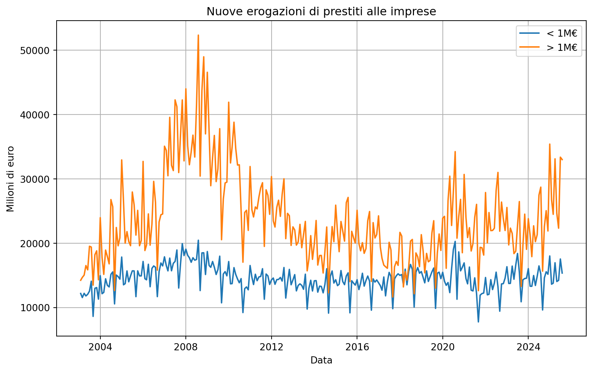
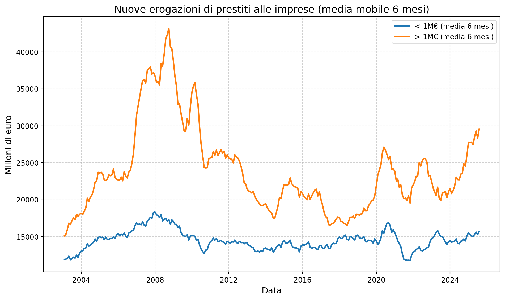
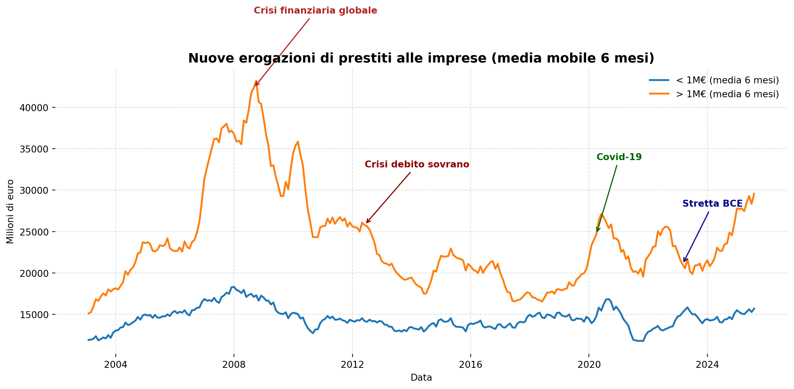
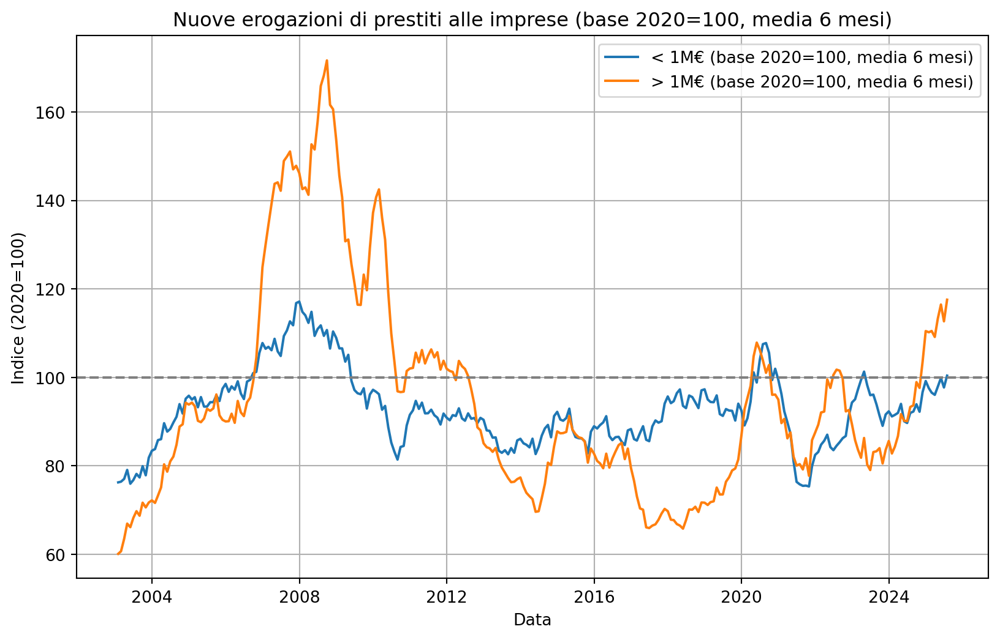
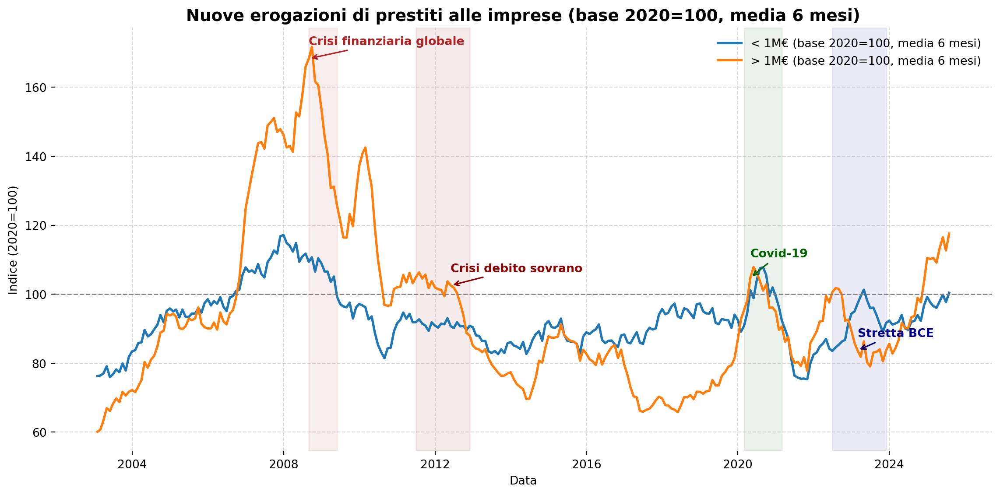
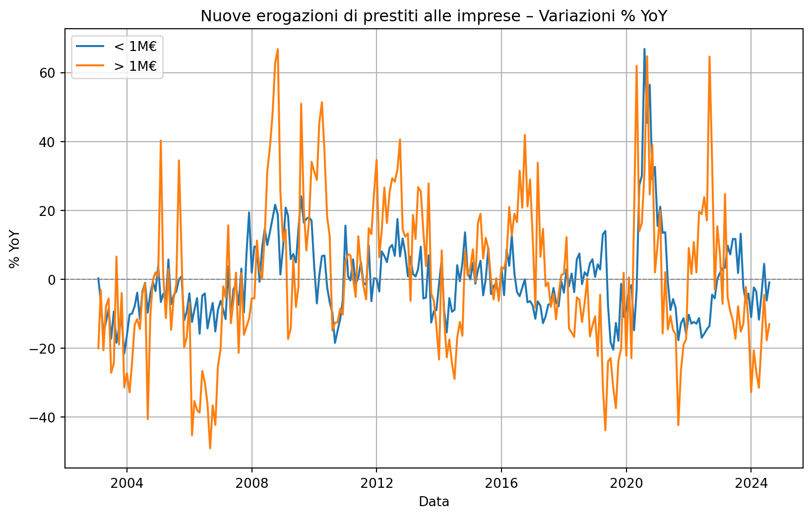
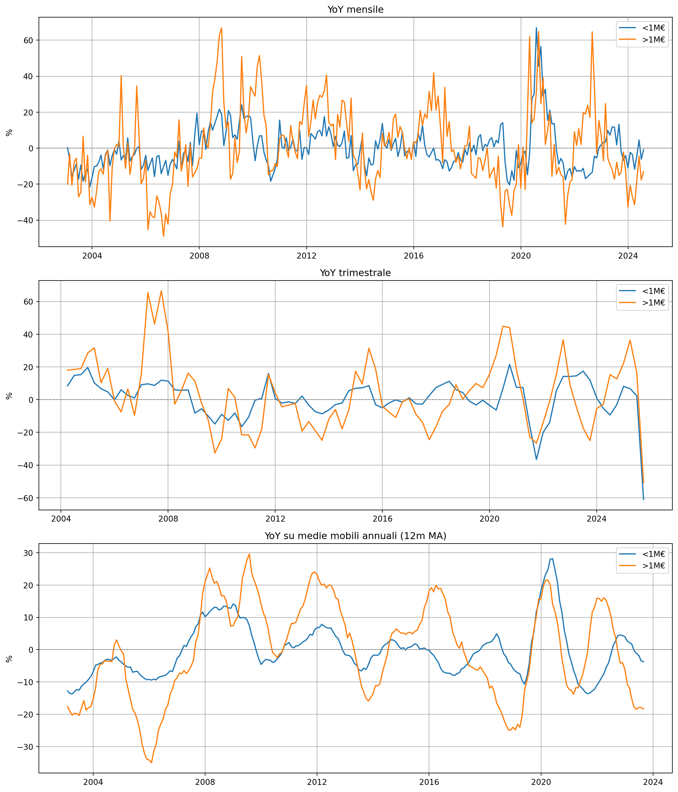
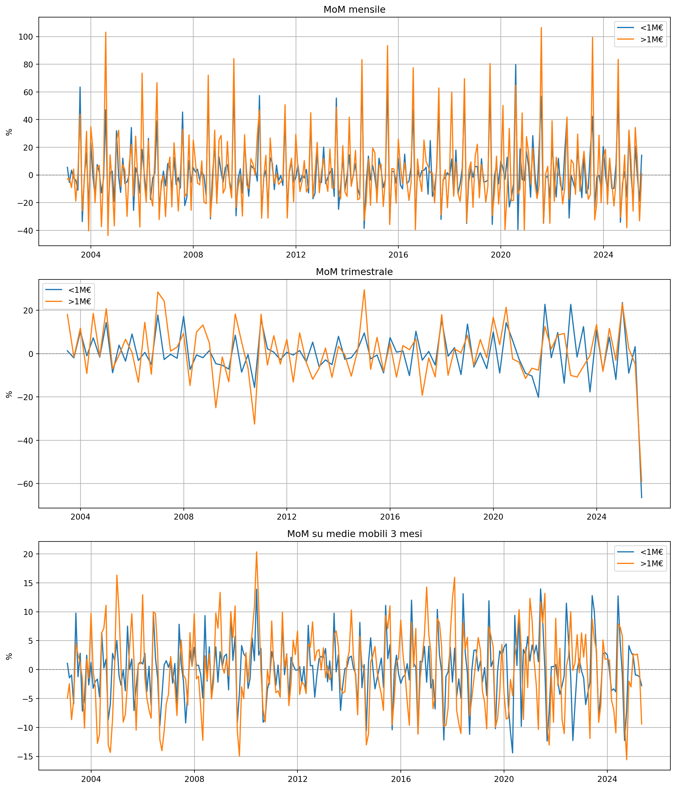

import pandas as pd
pd.set_option("display.max_columns", None) # mostra tutte le colonne
pd.set_option("display.max_colwidth", None) # non troncare i contenuti delle celle
pd.set_option("display.width", None) # non troncare la tabella a destra
import sqlite3
import matplotlib.pyplot as plt
from pathlib import Path
import re
import osMIR0300
DB_PATH = "D:/files/Bankit.sqlite"
conn = sqlite3.connect(DB_PATH)
tabella = 'MIR0300'
df = pd.read_sql(f"SELECT DATA_OSS, SERIE, VALORE FROM {tabella} order by 2 desc,1", conn)
df["DATA_OSS"] = pd.to_datetime(df["DATA_OSS"])
def parse_tokens(s: str):
parts = str(s).split(".")
return pd.Series({
"COD_MIR": parts[3] if len(parts) > 3 else None,
"COD_DURATA": parts[4] if len(parts) > 4 else None,
"COD_IMPORTO": parts[6] if len(parts) > 6 else None,
})
parsed = df["SERIE"].apply(parse_tokens)
df = pd.concat([df, parsed], axis=1)
map_labels = {
"MIR5411": "Prestiti", # diversi dai conti correnti, prestiti rotativi e carte di credito
"MIR5414": "Prestiti garantiti", # diversi dai conti correnti, prestiti rotativi e carte di credito
"MIR5427": "Prestiti effettivi", # diversi dai conti correnti, prestiti rotativi e carte di credito
"5": "< 1Y",
"9": "Tot.",
"46": "< 1M€",
"47": "> 1M€",
"1000": "Tot",
}
df["MIR_DESC"] = df["COD_MIR"].map(map_labels)
df["DURATA_DESC"] = df["COD_DURATA"].map(map_labels)
df["IMPORTO_DESC"] = df["COD_IMPORTO"].map(map_labels)
def compose_label(row):
parts = []
if pd.notna(row.get("MIR_DESC")): parts.append(row["MIR_DESC"])
if pd.notna(row.get("DURATA_DESC")): parts.append(row["DURATA_DESC"])
if pd.notna(row.get("IMPORTO_DESC")): parts.append(row["IMPORTO_DESC"])
return " - ".join(parts) if parts else None
df["SERIE_DECOD"] = df.apply(compose_label, axis=1)
tab = df.pivot_table(
index="DATA_OSS",
columns="SERIE_DECOD",
values="VALORE",
aggfunc="sum"
).sort_index(ascending=False)
tab| SERIE_DECOD | Prestiti - < 1Y - Tot | Prestiti - Tot. - < 1M€ | Prestiti - Tot. - > 1M€ | Prestiti - Tot. - Tot | Prestiti effettivi - Tot. - < 1M€ | Prestiti effettivi - Tot. - > 1M€ | Prestiti effettivi - Tot. - Tot | Prestiti garantiti - Tot. - < 1M€ | Prestiti garantiti - Tot. - > 1M€ | Prestiti garantiti - Tot. - Tot |
|---|---|---|---|---|---|---|---|---|---|---|
| DATA_OSS | ||||||||||
| 2025-07-31 | 41444.7 | 15353.1 | 33000.7 | 48353.8 | 14135.6 | 25695.1 | 39830.7 | 2634.3 | 3081.0 | 5715.3 |
| 2025-06-30 | 45444.2 | 17544.1 | 33380.4 | 50924.5 | 16423.3 | 27418.5 | 43841.8 | 2693.5 | 3115.1 | 5808.6 |
| 2025-05-31 | 32798.8 | 14223.6 | 22332.3 | 36555.9 | 13264.9 | 17487.6 | 30752.5 | 2321.8 | 2272.2 | 4594.0 |
| 2025-04-30 | 34468.3 | 14037.4 | 24656.4 | 38693.8 | 12779.1 | 19764.9 | 32544.0 | 2384.9 | 2183.7 | 4568.6 |
| 2025-03-31 | 42751.6 | 16958.8 | 33118.5 | 50077.3 | 15719.1 | 25212.7 | 40931.8 | 2710.8 | 3540.5 | 6251.4 |
| ... | ... | ... | ... | ... | ... | ... | ... | ... | ... | ... |
| 2003-05-31 | 24050.6 | 12057.6 | 15851.6 | 27909.2 | 0.0 | 0.0 | 0.0 | 0.0 | 0.0 | 0.0 |
| 2003-04-30 | 24476.0 | 11797.4 | 16525.0 | 28322.4 | 0.0 | 0.0 | 0.0 | 0.0 | 0.0 | 0.0 |
| 2003-03-31 | 23604.2 | 12203.1 | 15033.9 | 27237.1 | 0.0 | 0.0 | 0.0 | 0.0 | 0.0 | 0.0 |
| 2003-02-28 | 21008.9 | 11544.9 | 14682.6 | 26227.5 | 0.0 | 0.0 | 0.0 | 0.0 | 0.0 | 0.0 |
| 2003-01-31 | 20089.1 | 12182.9 | 14234.2 | 26417.1 | 0.0 | 0.0 | 0.0 | 0.0 | 0.0 | 0.0 |
271 rows × 10 columns
import matplotlib.pyplot as plt
prestiti = tab[[
"Prestiti - Tot. - Tot",
"Prestiti - Tot. - < 1M€",
"Prestiti - Tot. - > 1M€"
]]
plt.figure(figsize=(10,6))
# plt.plot(prestiti.index, prestiti["Prestiti - Tot. - Tot"], label="Totale")
plt.plot(prestiti.index, prestiti["Prestiti - Tot. - < 1M€"], label="< 1M€")
plt.plot(prestiti.index, prestiti["Prestiti - Tot. - > 1M€"], label="> 1M€")
plt.title("Nuove erogazioni di prestiti alle imprese")
plt.xlabel("Data")
plt.ylabel("Milioni di euro")
plt.legend()
plt.grid(True)
plt.show()
# Calcolo di prestiti_smooth come media mobile a 6 mesi
prestiti_smooth = (
tab[[
"Prestiti - Tot. - Tot",
"Prestiti - Tot. - < 1M€",
"Prestiti - Tot. - > 1M€"
]]
.rolling(window=6, min_periods=1, center=True)
.mean()
)
prestiti_smooth.head(12)| SERIE_DECOD | Prestiti - Tot. - Tot | Prestiti - Tot. - < 1M€ | Prestiti - Tot. - > 1M€ |
|---|---|---|---|
| DATA_OSS | |||
| 2025-07-31 | 45278.066667 | 15706.933333 | 29571.133333 |
| 2025-06-30 | 43632.000000 | 15289.550000 | 28342.450000 |
| 2025-05-31 | 44921.060000 | 15623.400000 | 29297.660000 |
| 2025-04-30 | 43813.016667 | 15316.666667 | 28496.350000 |
| 2025-03-31 | 42481.550000 | 15028.083333 | 27453.466667 |
| 2025-02-28 | 42898.333333 | 15106.433333 | 27791.900000 |
| 2025-01-31 | 42983.850000 | 15264.083333 | 27719.766667 |
| 2024-12-31 | 43304.833333 | 15517.666667 | 27787.166667 |
| 2024-11-30 | 41155.200000 | 15125.416667 | 26029.783333 |
| 2024-10-31 | 38986.700000 | 14430.400000 | 24556.300000 |
| 2024-09-30 | 39581.650000 | 14696.133333 | 24885.516667 |
| 2024-08-31 | 38003.350000 | 14438.750000 | 23564.600000 |
plt.figure(figsize=(10,6))
plt.plot(prestiti_smooth.index, prestiti_smooth["Prestiti - Tot. - < 1M€"],
label="< 1M€ (media 6 mesi)", linewidth=2, color="tab:blue")
plt.plot(prestiti_smooth.index, prestiti_smooth["Prestiti - Tot. - > 1M€"],
label="> 1M€ (media 6 mesi)", linewidth=2, color="tab:orange")
plt.title("Nuove erogazioni di prestiti alle imprese (media mobile 6 mesi)", fontsize=14)
plt.xlabel("Data", fontsize=12)
plt.ylabel("Milioni di euro", fontsize=12)
plt.legend()
plt.grid(True, linestyle="--", alpha=0.6)
plt.tight_layout()
plt.show()
import pandas as pd
import numpy as np
import matplotlib.pyplot as plt
col_big = "Prestiti - Tot. - > 1M€"
col_small = "Prestiti - Tot. - < 1M€"
fig, ax = plt.subplots(figsize=(12,6))
ax.plot(prestiti_smooth.index, prestiti_smooth[col_small], label="< 1M€ (media 6 mesi)", linewidth=2)
ax.plot(prestiti_smooth.index, prestiti_smooth[col_big], label="> 1M€ (media 6 mesi)", linewidth=2)
ax.set_title("Nuove erogazioni di prestiti alle imprese (media mobile 6 mesi)", fontsize=14, weight="bold")
ax.set_xlabel("Data"); ax.set_ylabel("Milioni di euro")
ax.grid(True, linestyle="--", alpha=0.4)
ax.legend(frameon=False)
def annotate_event(date_str, text, color="#333", y_offset=8000):
"""Aggancia l’annotazione al timestamp dell’indice più vicino a date_str."""
d = pd.to_datetime(date_str)
# trova l’indice più vicino
idx = prestiti_smooth.index.get_indexer([d], method="nearest")[0]
x = prestiti_smooth.index[idx]
y = prestiti_smooth.loc[x, col_big]
if np.isnan(y):
# fallback: se NaN su quella serie, usa l'altra
y = prestiti_smooth.loc[x, col_small]
ax.annotate(
text, xy=(x, y), xytext=(x, y + y_offset),
arrowprops=dict(arrowstyle="->", color=color, lw=1.2),
fontsize=10, color=color, weight="bold"
)
# Annotazioni (usa date approssimate: la funzione sceglie il punto più vicino)
annotate_event("2008-09-01", "Crisi finanziaria globale", "#b22222", y_offset=9000)
annotate_event("2012-06-01", "Crisi debito sovrano", "#8b0000", y_offset=7000)
annotate_event("2020-04-01", "Covid-19", "#006400", y_offset=9000)
annotate_event("2023-03-01", "Stretta BCE", "#00008b", y_offset=7000)
# ax.axvspan(pd.Timestamp("2008-09-01"), pd.Timestamp("2009-06-01"), color="#b22222", alpha=0.08)
# Spine pulite
for spine in ax.spines.values():
spine.set_visible(False)
plt.tight_layout()
plt.show()
import matplotlib.pyplot as plt
col_big = "Prestiti - Tot. - > 1M€"
col_small = "Prestiti - Tot. - < 1M€"
base_date = "2020-01-01"
# Copia del dataframe
prestiti_base100 = prestiti.copy()
# Normalizzazione in base 100 dal primo valore disponibile ≥ 2020-01
for col in [col_big, col_small]:
base_value = prestiti_base100.loc[prestiti_base100.index >= base_date, col].iloc[0]
prestiti_base100[col] = prestiti_base100[col] / base_value * 100
# Applica smoothing con media mobile 6 mesi centrata
prestiti_smooth100 = prestiti_base100.rolling(window=6, center=True).mean()base_year = 2020
prestiti_base = prestiti_smooth.loc[str(base_year)]
# calcolo della media 2020 per ogni colonna
base_values = prestiti_base.mean()
prestiti_index = prestiti_smooth / base_values * 100
plt.figure(figsize=(10,6))
plt.plot(prestiti_index.index, prestiti_index[col_small], label="< 1M€ (base 2020=100, media 6 mesi)")
plt.plot(prestiti_index.index, prestiti_index[col_big], label="> 1M€ (base 2020=100, media 6 mesi)")
plt.axhline(100, color="gray", linestyle="--")
plt.title("Nuove erogazioni di prestiti alle imprese (base 2020=100, media 6 mesi)")
plt.xlabel("Data")
plt.ylabel("Indice (2020=100)")
plt.legend()
plt.grid(True)
plt.show()
import pandas as pd
import numpy as np
import matplotlib.pyplot as plt
col_small = "Prestiti - Tot. - < 1M€"
col_big = "Prestiti - Tot. - > 1M€"
# --- funzione annotazione robusta (aggancia al punto più vicino) ---
def annotate_event(ax, df, date_str, text, series_col, color="#333", y_offset=6):
d = pd.to_datetime(date_str)
idx = df.index.get_indexer([d], method="nearest")[0]
x = df.index[idx]
y = df.loc[x, series_col]
ax.annotate(text, xy=(x, y), xytext=(x, y + y_offset),
arrowprops=dict(arrowstyle="->", color=color, lw=1.2),
fontsize=10, color=color, weight="bold")
# --- plot base 2020=100 con media 6 mesi (già in prestiti_index) ---
fig, ax = plt.subplots(figsize=(12,6))
ax.plot(prestiti_index.index, prestiti_index[col_small],
label="< 1M€ (base 2020=100, media 6 mesi)", lw=2, color="#1f77b4")
ax.plot(prestiti_index.index, prestiti_index[col_big],
label="> 1M€ (base 2020=100, media 6 mesi)", lw=2, color="#ff7f0e")
ax.set_title("Nuove erogazioni di prestiti alle imprese (base 2020=100, media 6 mesi)",
fontsize=14, weight="bold")
ax.set_xlabel("Data"); ax.set_ylabel("Indice (2020=100)")
ax.axhline(100, color="gray", ls="--", lw=1)
ax.grid(True, ls="--", alpha=0.5)
# --- bande verticali per i periodi-chiave ---
bands = [
("2008-09-01", "2009-06-01", "#b22222", 0.08, "Crisi 2008-09"),
("2011-07-01", "2012-12-01", "#8b0000", 0.08, "Crisi debito sovrano"),
("2020-03-01", "2021-03-01", "#006400", 0.08, "Covid-19"),
("2022-07-01", "2023-12-01", "#00008b", 0.08, "Stretta BCE"),
]
for start, end, color, alpha, _ in bands:
ax.axvspan(pd.to_datetime(start), pd.to_datetime(end), color=color, alpha=alpha)
# --- frecce/etichette (uso la serie >1M€ per ancorare le frecce) ---
annotate_event(ax, prestiti_index, "2008-09-01", "Crisi finanziaria globale",
col_big, color="#b22222", y_offset=4)
annotate_event(ax, prestiti_index, "2012-06-01", "Crisi debito sovrano",
col_big, color="#8b0000", y_offset=4)
annotate_event(ax, prestiti_index, "2020-05-01", "Covid-19",
col_big, color="#006400", y_offset=6)
annotate_event(ax, prestiti_index, "2023-03-01", "Stretta BCE",
col_big, color="#00008b", y_offset=4)
# legenda pulita e stile minimal
ax.legend(frameon=False, loc="upper right")
for s in ax.spines.values():
s.set_visible(False)
plt.tight_layout()
plt.show()
Ottimo, ora il YoY (Year-over-Year) è molto più leggibile 👍. Ti faccio una lettura dei trend principali mettendoli in relazione con gli eventi storici ed economici che spiegano le dinamiche delle nuove erogazioni di prestiti alle imprese:
🔹 2003-2007: espansione pre-crisi
- Le nuove erogazioni, soprattutto >1M€, crescono con tassi YoY anche del +20/40%.
- Cause: fase di crescita economica mondiale, credito abbondante, tassi BCE relativamente bassi, forte leva finanziaria nelle imprese.
- È il periodo in cui il credito bancario si espande prima della crisi subprime.
🔹 2008-2012: crisi finanziaria e crisi del debito sovrano
- Crollo del 2008-09: YoY crolla a –40/–50% → riflette il credit crunch dovuto al fallimento Lehman e al congelamento dei mercati interbancari.
- Breve rimbalzo 2010 (stimoli fiscali e monetari post-crisi).
- Nuovo calo 2011-2012: crisi del debito sovrano europeo → banche italiane riducono fortemente l’offerta di credito, soprattutto per i prestiti >1M€ (imprese medio-grandi).
🔹 2013-2016: stagnazione e deleveraging
- YoY mediamente negativo o intorno allo zero → segnale di deleveraging: le imprese riducono l’indebitamento, le banche razionano il credito.
- Cause: recessione italiana, stretta regolamentare (Basilea 3), crescita bassa, aumento sofferenze bancarie.
- Prestiti <1M€ (PMI e microimprese) più stabili ma comunque su livelli bassi.
🔹 2017-2019: ripresa moderata
- Tassi YoY tornano positivi, ma senza picchi.
- Cause: politica monetaria ultra-espansiva BCE (QE, tassi negativi), spread BTP-Bund sotto controllo, fiducia in miglioramento.
- La ripresa resta fragile: crescita limitata, domanda di credito non esplosiva.
🔹 2020-2021: shock pandemico
- Crollo immediato marzo 2020 (lockdown, incertezza).
- Boom successivo: misure straordinarie (garanzie pubbliche MCC, moratorie, liquidità BCE) → picco YoY oltre +60% sia <1M€ che >1M€.
- Questa fase segna il massimo delle nuove erogazioni negli ultimi 20 anni.
🔹 2022-2023: inflazione e stretta BCE
- YoY torna fortemente negativo (–20/–30%).
- Cause: aumento tassi BCE dal luglio 2022, inflazione elevata, costo del credito schizzato al 6-7% medio.
- Colpisce soprattutto prestiti >1M€, cioè le imprese più esposte a fabbisogni di capitale per investimenti.
🔹 2024-2025: stabilizzazione fragile
- YoY rimane volatile ma meno estremo.
- Cause: politica monetaria ancora restrittiva, domanda debole, incertezza geopolitica.
- Si intravede una differenza strutturale: i <1M€ tendono a essere più resilienti, mentre i >1M€ mostrano maggiore ciclicità.
📌 Sintesi:
- I prestiti >1M€ sono molto più sensibili al ciclo economico e agli shock finanziari → riflettono investimenti e grandi operazioni aziendali.
- I prestiti <1M€ sono più legati al capitale circolante delle PMI → meno volatili, ma soffrono nelle fasi di stretta creditizia prolungata.
- I picchi YoY (positivi e negativi) coincidono con crisi sistemiche o interventi pubblici (2008, 2012, 2020, 2022).
Vuoi che ti preparo un grafico annotato (con frecce e label “Crisi 2008”, “QE BCE”, “Covid”, “Stretta 2022”) così diventa anche un ottimo materiale da presentazione?
# Calcola YoY (variazione % rispetto a 12 mesi prima)
prestiti_yoy = prestiti.pct_change(periods=12) * 100
plt.figure(figsize=(10,6))
plt.plot(prestiti_yoy.index, prestiti_yoy["Prestiti - Tot. - < 1M€"], label="< 1M€")
plt.plot(prestiti_yoy.index, prestiti_yoy["Prestiti - Tot. - > 1M€"], label="> 1M€")
plt.axhline(0, color="gray", linewidth=0.8, linestyle="--")
plt.title("Nuove erogazioni di prestiti alle imprese – Variazioni % YoY")
plt.xlabel("Data")
plt.ylabel("% YoY")
plt.legend()
plt.grid(True)
plt.show()
import matplotlib.pyplot as plt
# --- 1. YoY mensile ---
yoy_m = prestiti.pct_change(12) * 100
# --- 2. YoY trimestrale ---
prestiti_q = prestiti.resample("Q").sum()
yoy_q = prestiti_q.pct_change(4) * 100
# --- 3. YoY su media mobile annuale ---
prestiti_ma = prestiti.rolling(12).mean()
yoy_ma = prestiti_ma.pct_change(12) * 100
# --- Plot ---
fig, axes = plt.subplots(3, 1, figsize=(12, 14), sharey=False)
# 1. Mensile
axes[0].plot(yoy_m.index, yoy_m["Prestiti - Tot. - < 1M€"], label="<1M€")
axes[0].plot(yoy_m.index, yoy_m["Prestiti - Tot. - > 1M€"], label=">1M€")
axes[0].axhline(0, color="gray", ls="--", lw=0.8)
axes[0].set_title("YoY mensile")
axes[0].set_ylabel("%")
axes[0].legend(); axes[0].grid(True)
# 2. Trimestrale
axes[1].plot(yoy_q.index, yoy_q["Prestiti - Tot. - < 1M€"], label="<1M€")
axes[1].plot(yoy_q.index, yoy_q["Prestiti - Tot. - > 1M€"], label=">1M€")
axes[1].axhline(0, color="gray", ls="--", lw=0.8)
axes[1].set_title("YoY trimestrale")
axes[1].set_ylabel("%")
axes[1].legend(); axes[1].grid(True)
# 3. Media mobile annuale
axes[2].plot(yoy_ma.index, yoy_ma["Prestiti - Tot. - < 1M€"], label="<1M€")
axes[2].plot(yoy_ma.index, yoy_ma["Prestiti - Tot. - > 1M€"], label=">1M€")
axes[2].axhline(0, color="gray", ls="--", lw=0.8)
axes[2].set_title("YoY su medie mobili annuali (12m MA)")
axes[2].set_ylabel("%")
axes[2].legend(); axes[2].grid(True)
plt.tight_layout()
plt.show()
# --- 1. MoM mensile ---
mom_m = prestiti.pct_change(1) * 100
# --- 2. MoM trimestrale ---
prestiti_q = prestiti.resample("Q").sum()
mom_q = prestiti_q.pct_change(1) * 100
# --- 3. MoM su media mobile 3 mesi ---
prestiti_ma3 = prestiti.rolling(3).mean()
mom_ma3 = prestiti_ma3.pct_change(1) * 100
# --- Plot ---
fig, axes = plt.subplots(3, 1, figsize=(12, 14), sharey=False)
# 1. Mensile
axes[0].plot(mom_m.index, mom_m["Prestiti - Tot. - < 1M€"], label="<1M€")
axes[0].plot(mom_m.index, mom_m["Prestiti - Tot. - > 1M€"], label=">1M€")
axes[0].axhline(0, color="gray", ls="--", lw=0.8)
axes[0].set_title("MoM mensile")
axes[0].set_ylabel("%")
axes[0].legend(); axes[0].grid(True)
# 2. Trimestrale
axes[1].plot(mom_q.index, mom_q["Prestiti - Tot. - < 1M€"], label="<1M€")
axes[1].plot(mom_q.index, mom_q["Prestiti - Tot. - > 1M€"], label=">1M€")
axes[1].axhline(0, color="gray", ls="--", lw=0.8)
axes[1].set_title("MoM trimestrale")
axes[1].set_ylabel("%")
axes[1].legend(); axes[1].grid(True)
# 3. Media mobile 3 mesi
axes[2].plot(mom_ma3.index, mom_ma3["Prestiti - Tot. - < 1M€"], label="<1M€")
axes[2].plot(mom_ma3.index, mom_ma3["Prestiti - Tot. - > 1M€"], label=">1M€")
axes[2].axhline(0, color="gray", ls="--", lw=0.8)
axes[2].set_title("MoM su medie mobili 3 mesi")
axes[2].set_ylabel("%")
axes[2].legend(); axes[2].grid(True)
plt.tight_layout()
plt.show()
df['SERIE'].unique()array(['BAM_MIR.M.1300010.MIR5427.9.951.47.SBI77.EUR.110.997',
'BAM_MIR.M.1300010.MIR5427.9.951.46.SBI77.EUR.110.997',
'BAM_MIR.M.1300010.MIR5427.9.951.1000.SBI77.EUR.110.997',
'BAM_MIR.M.1300010.MIR5414.9.951.47.SBI77.EUR.110.997',
'BAM_MIR.M.1300010.MIR5414.9.951.46.SBI77.EUR.110.997',
'BAM_MIR.M.1300010.MIR5414.9.951.1000.SBI77.EUR.110.997',
'BAM_MIR.M.1300010.MIR5411.9.951.47.SBI77.EUR.110.997',
'BAM_MIR.M.1300010.MIR5411.9.951.46.SBI77.EUR.110.997',
'BAM_MIR.M.1300010.MIR5411.9.951.1000.SBI77.EUR.110.997',
'BAM_MIR.M.1300010.MIR5411.5.951.1000.SBI77.EUR.110.997'],
dtype=object)